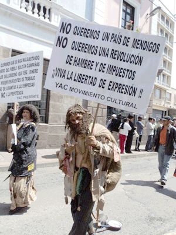

Los resultados
 Como se mencionó, el ‘SÍ’ sale con una ventaja a nivel nacional en las diez preguntas. Pero los resultados son más bien apretados. Lo que es más, en las preguntas clave sobre la reforma de la judicatura y el control de los medios –la cuarta y la novena– son apretadísimas. Solo una pregunta, la primera, que pondría fin a la caducidad de la prisión preventiva, llegó a tener un poco más del 50 por ciento de aceptación (ver recuadro de resultados a nivel nacional). En términos generales, el rango del ‘SÍ’ fluctúa entre 45 y 50 por ciento, mientras para el ‘NO’, el porcentaje de votos a favor se encuentra entre 39 y 42. Y, como han señalado varios analistas, si al ‘NO’ se sumarían los votos nulos y blancos –porque las personas quienes anularon o decidieron no votar no se pueden definir como convencidos de Alianza País– el ‘NO’ hubiera triunfado. Y si se toma en cuenta, como sugiere el analista Simón Espinoza, el 25 por ciento de ausentismo, el ‘SÍ’ sale con apenas una cuarta parte del electorado a favor, lo que no se podría definir como la victoria “contundente” imaginada por el presidente Correa.
Como se mencionó, el ‘SÍ’ sale con una ventaja a nivel nacional en las diez preguntas. Pero los resultados son más bien apretados. Lo que es más, en las preguntas clave sobre la reforma de la judicatura y el control de los medios –la cuarta y la novena– son apretadísimas. Solo una pregunta, la primera, que pondría fin a la caducidad de la prisión preventiva, llegó a tener un poco más del 50 por ciento de aceptación (ver recuadro de resultados a nivel nacional). En términos generales, el rango del ‘SÍ’ fluctúa entre 45 y 50 por ciento, mientras para el ‘NO’, el porcentaje de votos a favor se encuentra entre 39 y 42. Y, como han señalado varios analistas, si al ‘NO’ se sumarían los votos nulos y blancos –porque las personas quienes anularon o decidieron no votar no se pueden definir como convencidos de Alianza País– el ‘NO’ hubiera triunfado. Y si se toma en cuenta, como sugiere el analista Simón Espinoza, el 25 por ciento de ausentismo, el ‘SÍ’ sale con apenas una cuarta parte del electorado a favor, lo que no se podría definir como la victoria “contundente” imaginada por el presidente Correa.En efecto, el ‘SÍ’ perdió en la mitad de las 24 provincias, todas en la Sierra y la Amazonia. La derrota más definitiva fue la de Morona Santiago, en donde más del 60 por ciento del electorado dijo ‘NO’ a las nueve preguntas (la pregunta 8, sobre la matanza de animales por diversión, solo constaba en las papeletas de los cantones en donde se ofrece este tipo de entretenimiento). En cambio, el ‘SÍ’ ganó en la Costa, en una provincia de la Amazonia y en Pichincha (en siete de las nueve preguntas), Azuay e Imbabura. En esta última, el cantón Cotacachi –y la zona de Íntag– le dieron a la posición oficialista un triunfo bastante cómodo.
¿Por qué casi pierde el ‘SÍ’?
 Ésta es la pregunta que más atención ha recibido de los analistas, del régimen y de las oposiciones. Porque el Gobierno tenía absolutamente todo a su favor. El hermano del Presidente, Fabriccio Correa, describió la formidable desigualdad entre el oficialismo y las oposiciones en estas palabras: La campaña fue “una pelea entre tigre suelto y burro amarrado. Pero un burro respondón…”. Para comenzar, el CNE ni intentó ocultar su claro y, según una de los vocales del CNE, Marcia Caicedo, vergonzoso favoritismo por la tesis oficial (ver recuadro, declaraciones de la consejera Caicedo, pág. 4). En efecto, el CNE declaró al Presidente “sujeto político” así dándole el derecho a recibir el doble de fondos del Estado, para él mismo y para Alianza PAIS. Además, Omar Simon, jefe de esta entidad electoral, no le exigió al Presidente pedir licencia para hacer campaña. Pero no contento con los 100 mil dólares presupuestados para cada uno de los sujetos políticos con derecho a hacer campaña, el Gobierno dedicó toda su energía, sus funcionarios y una buena suma del presupuesto del Estado para hacer campaña. Según los cálculos de Participación Ciudadana, el régimen gasto 30 veces lo gastado por la oposición, y eso sin tomar en cuenta los sueldos de los ministros y otros funcionarios que se dedicaban a hacer campaña, los conciertos organizados por la ministra de Patrimonio y una larga lista de etcéteras.
Ésta es la pregunta que más atención ha recibido de los analistas, del régimen y de las oposiciones. Porque el Gobierno tenía absolutamente todo a su favor. El hermano del Presidente, Fabriccio Correa, describió la formidable desigualdad entre el oficialismo y las oposiciones en estas palabras: La campaña fue “una pelea entre tigre suelto y burro amarrado. Pero un burro respondón…”. Para comenzar, el CNE ni intentó ocultar su claro y, según una de los vocales del CNE, Marcia Caicedo, vergonzoso favoritismo por la tesis oficial (ver recuadro, declaraciones de la consejera Caicedo, pág. 4). En efecto, el CNE declaró al Presidente “sujeto político” así dándole el derecho a recibir el doble de fondos del Estado, para él mismo y para Alianza PAIS. Además, Omar Simon, jefe de esta entidad electoral, no le exigió al Presidente pedir licencia para hacer campaña. Pero no contento con los 100 mil dólares presupuestados para cada uno de los sujetos políticos con derecho a hacer campaña, el Gobierno dedicó toda su energía, sus funcionarios y una buena suma del presupuesto del Estado para hacer campaña. Según los cálculos de Participación Ciudadana, el régimen gasto 30 veces lo gastado por la oposición, y eso sin tomar en cuenta los sueldos de los ministros y otros funcionarios que se dedicaban a hacer campaña, los conciertos organizados por la ministra de Patrimonio y una larga lista de etcéteras. Otros aspectos de la estrategia oficial: tenía todos los medios oficiales a sus órdenes e interrumpía constantemente la programación normal de los medios no oficiales para difundir sus cadenas. Subió el sueldo de militares y policías –retroactivamente desde enero– entre el 4 y el 10 por ciento, unos días antes de la votación. Seguía en campaña durante los dos días de ‘silencio electoral’ que precede toda votación. El presidente Correa se desplazó hacia 130 lugares en los últimos 90 días antes del 7 de mayo, tres veces el número de viajes emprendidos en los 90 días anteriores. Y sólo del 1 al 4 de mayo, visitó 27 sitios. Los días anteriores a los comicios vieron al Jefe de Estado inmerso en lo que un medio caracterizó como la “baratilla de ofertas”. Entregó 4 200 borregos a comunidades de Cotopaxi y Bolívar (provincias en donde, no obstante, el ‘SÍ’ perdió en forma definitiva), dentro de un Programa de Desarrollo de la Sierra Central, sobre el cual no existe registro ni en el Ministerio de Agricultura ni en la presidencia. Inauguró múltiples obras y firmó múltiples decretos para la construcción de obras nuevas: un metro para Quito y un aeropuerto ‘ecológico’ para Baltra en las Galápagos. En el primer trimestre del año, el Ministerio de Salud gastó más de 222 millones de dólares. El Gobierno entregó recursos para los planes de agua potable de Saquisilí, Pangui y Riobamba, en las provincias de Cotopaxi, Zamora Chinchipe y Chimborazo, respectivamente, donde a pesar de esta muestra de ‘bondad’, el ‘SÍ’ perdió. Y acudió a los medios privados que tantas veces ha tachado de ‘corruptos’ 64 veces entre el 1 de marzo y el 4 de mayo mientras solo apareció en persona en los medios gubernamentales 11 veces en el mismo lapso.
Sin embargo, por poco, pierde. ¿Por qué? Por el milagro obrado por el propio Jefe de Estado.
El milagro
En buen cristiano, al presidente Correa le salió el tiro por la culata. Según un analista, la campaña arrancó con el 70 por ciento de apoyo para el oficialismo y el 20 por ciento para los opositores. Pero en el transcurso de 90 días, la aprobación del electorado para la tesis oficial cayó en 20 puntos y la de las oposiciones subió en 20 y la consulta termina en un virtual empate. La razón: con su mensaje dogmático, insultante, mesiánico el mandatario logró unir a las oposiciones cuyos miembros, en términos políticos e ideológicos, no tienen nada en común. Esto, en síntesis, es la conclusión de todos los analistas, incluso los miembros de Alianza PAIS dispuestos a la autocrítica. Según José Hernández, del diario Expreso: “Los resultados del CNE muestran que la hegemonía del correísmo se acabó y no se avizoran los elementos que pudieran devolver la película. De su movimiento político no saldrá alternativa alguna porque el presidente, en su visión unívoca, lo ató umbilicalmente a su destino. Como su brazo operativo. Otro error estratégico de la cúpula de PAIS que, en forma consciente, entregó el futuro de una supuesta tendencia a un líder máximo”.
Y, en efecto, lo que tuvieron las oposiciones a su favor eran: cadenas nacionales sin fin que se difundían incluso en momentos clave de las novelas favoritas de la teleaudiencia; la denigración del presidente Correa a dos íconos de la gente común y corriente: el teatrero de la calle Carlos Michelena (ver recuadro) y el medallista olímpico Jefferson Pérez por tener las agallas de cuestionar la posición oficial; el encarcelamiento y violencia por parte de hinchas del régimen contra personas que atrevían a expresar su oposición, provocada por el mismo Jefe de Estado; el gasto desmesurado del Gobierno durante la campaña; el favoritismo descarado del CNE... En las palabras del editorialista de la revista Vanguardia: “Derrota porque una revolución que se basa en el miedo, en el abuso, la venganza y la mentira es cualquier cosa menos revolución”.
Y, como mencionado, la derrota fue más contundente en las provincias amazónicas, sobre todo, en Morona Santiago.
Como consecuencia, según el prefecto de la provincia, Salvador Quishpe: “El Presidente está obligado a reflexionar. La respuesta popular dice no a la prepotencia y al gobierno de Alexis Mera, de los Alvarado y las transnacionales. En nuestra provincia, como en buena parte de la Amazonia, la inseguridad no es el principal problema. Sí lo es el avance de las mineras a cielo abierto”.
Reflexión secundada por la asambleísta de Pachakutik, Diana Atanmait: “Si para la reforma a la justicia al gobierno se le complicó el panorama, para la otra batalla a venir, la explotación minera, la situación se le bloqueó. El trunfo abrumador del NO en las provincias del emporio minero, Morona Santiago y Zamora Chinchipe, prendió los faroles a las voces de la resistencia, sobre todo vinculada al movimiento indígena. No es negociable”.
Y, ¿Íntag?
Como ya se mencionó, en la zona de Íntag, sobre la cual pende la misma amenaza, el triunfo del ‘SÍ’ fue notable en todas las parroquias. ¿Por qué? Según un análisis de José Cueva, presidente del Consorcio Toisán, la respuesta es obvia si se examina las cifras:
Número de habitantes de Intag 17.000
Número de beneficiarios del bono de desarrollo humano: 3.700
Número de beneficiarios de combos alimenticios: 2.617
Número de beneficiarios de suplementos nutricionales (niños): 1.382
Número de beneficiarios del MIES en diferentes proyectos: 9.188
Número de beneficiarios de la Secretaría Nacional de Riesgos: 38 familias
Número de beneficiarios del MIDUVI (bono de la vivienda): 185 familias
Número de beneficiarios del proyecto creciendo con nuestros niños INFA: 3.245 hogares
El dirigente de la Zona concluye: “Es decir, casi la totalidad de los habitantes de Intag están recibiendo algún tipo de regalo o bono del gobierno. No cito algunos otros proyectos nuevos de los cuales no tengo datos. Uno de los mensajes muy claros de la campaña del Gobierno fue que si no gana el ‘SÍ’ en Íntag, se suspenden todos estos regalos. Igualmente uno de los proyectos más importantes para la Zona, la carretera, está en fase de estudios y se oyó del Gobierno Provincial que si pierde el ‘SÍ’, probablemente no habrá fondos para la construcción”.
El señor Cueva también menciona la actitud ‘coqueta’ de algunas organizaciones que reciben dinero mediante programas del Estado. Las cifras del triunfo del ‘SÍ’ se pueden analizar en el cuadro, página 3.
¿El futuro?
Según César Montúfar, asambleísta: “Esta consulta se convirtió como en una partera de una oposición en crecimiento”. Y añade Betty Amores, asambleísta que salió del movimiento gubernamental el año pasado: “El país da señales de que quiere cambios, pero con respeto a las libertades bajo un régimen que no sea autoritario”.
Sin embargo, en vista del carácter del líder de PAIS, las oposiciones ven poca posibilidad de que el presidente Correa cambie. Como lo expresa Humberto Cholango, presidente de la Confederación de Nacionalidades Indígenas del Ecuador (CONAIE): “No soy psicólogo, pero espero que [Rafael Correa] cambie de actitud, aunque creo que es pedir imposibles”.
Lo cierto es que ya existe una alternativa a la opción oficial.